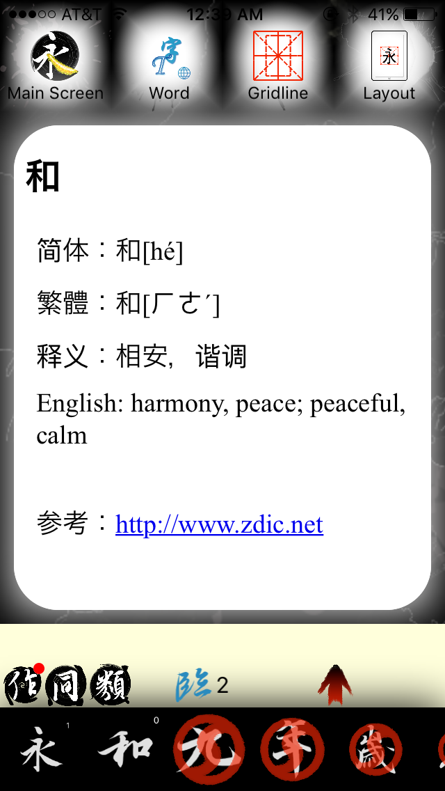
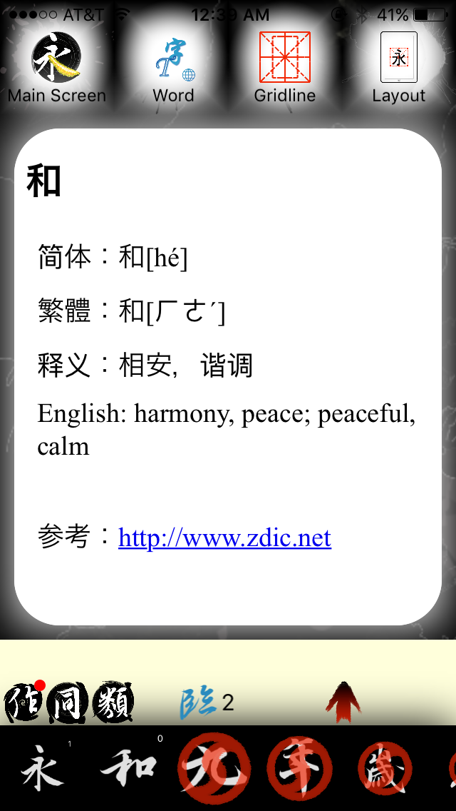

The design of “Learn Arabic Calligraphy” feels fairly modern, and is easy to understand and navigate. However, everything is in Arabic, so it would be helpful if it included a way to translate to English. The gradient blue and gray feels slightly outdated and very “PC”. It would be nice to see a cleaner interface with less gradients and no busy background so that the user can focus on the main function of the app: the calligraphy. The tool bars are detailed - it is nice that the app allows the user to change the pen and brush style, as well as the color. The interface gives a good amount of freedom so the user can practice Arabic calligraphy. Overall, the app gets the job done, but can be improved with a better design interface
The interface design of “Live Calligraphy” feels unrefined, but it matches the theme of the app nicely, and makes me feel like I am writing Chinese calligraphy on old parchment paper. The app is easy to use - I instantly knew how to navigate “Live Calligraphy” shortly after opening the app, and following the instructions on-screen. Even when the tutorial didn’t identify some of the other icons, it was easy to insinuate what the icons meant. The app does a thorough job of showing the user how to write certain characters and learn about its meaning. The app takes writing the characters seriously - as it forces the user to practice again if the user doesn’t write the character correct the first time. It also allows the user to practice characters free-hand, which aligns with my idea of combining a calligraphy app with an language calligraphy app. Overall, the app does a solid job at showing the user how to write certain characters, while making sure to include facts about the Chinese culture. The interface could use some refinement and modern flair.
 

Both apps allow the user to practice calligraphy, but each app has its individual perks. “Learn Arabic Calligraphy” includes a helpful tool bar that allows more interaction and freedom with writing the characters, while “Live Calligraphy” only includes one brush style and color. However, “Live Calligraphy” allows more options for the user to practice the calligraphy, and learn about the culture. I want to create an app that allows the user to practice calligraphy and learn a little bit about the culture at the same time, and includes a tool bar so that the user can utilize different brush sizes, styles, and colors to their liking.